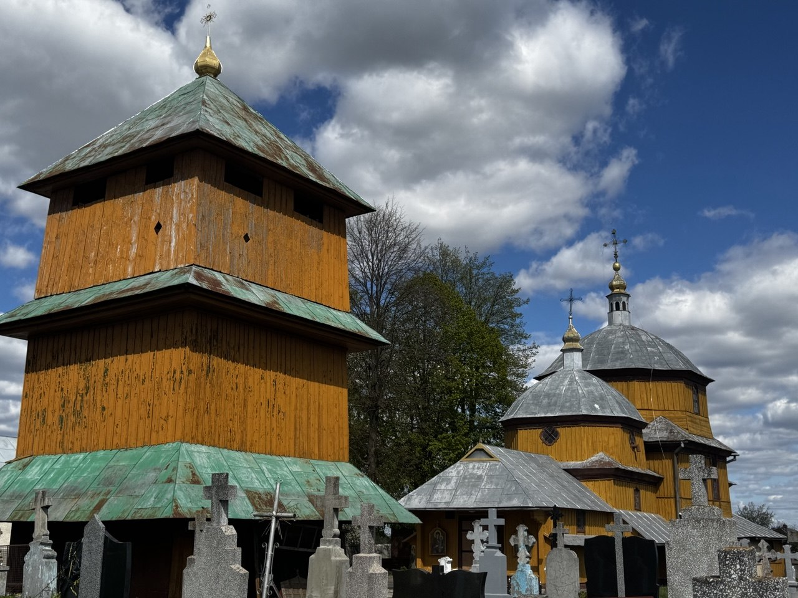
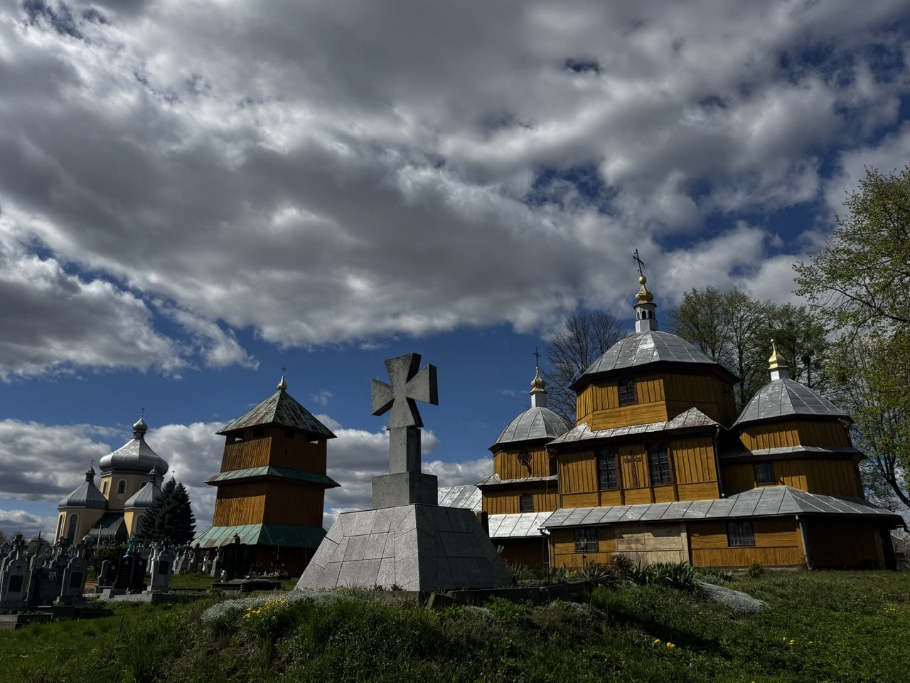
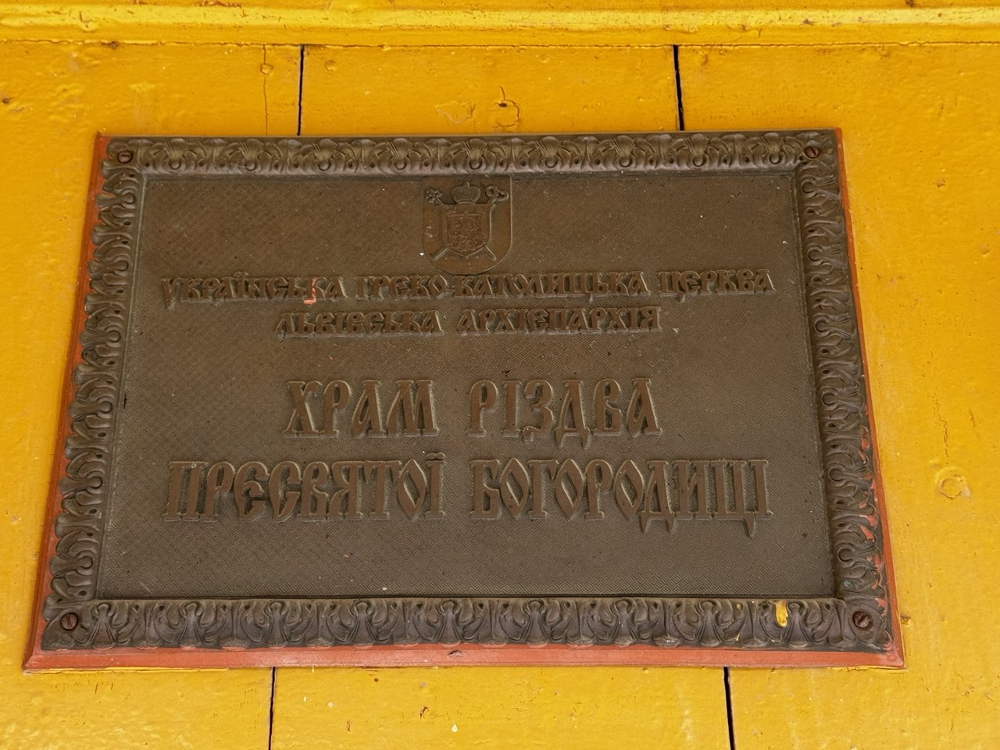
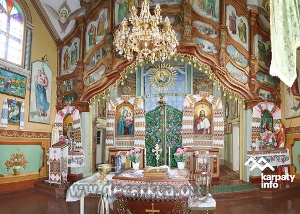
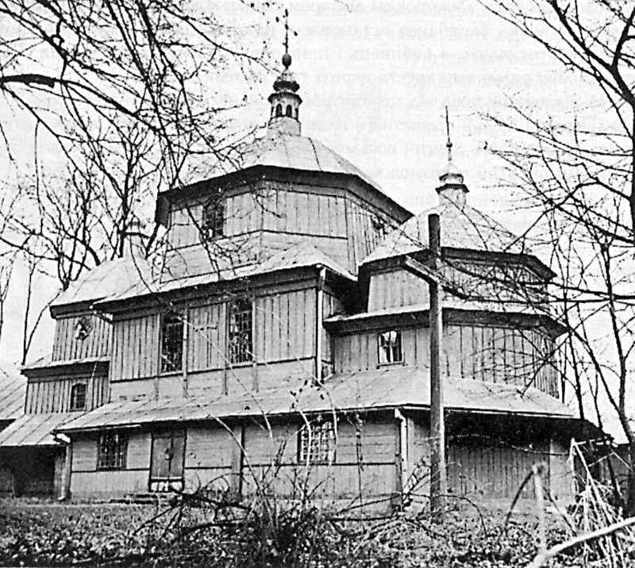
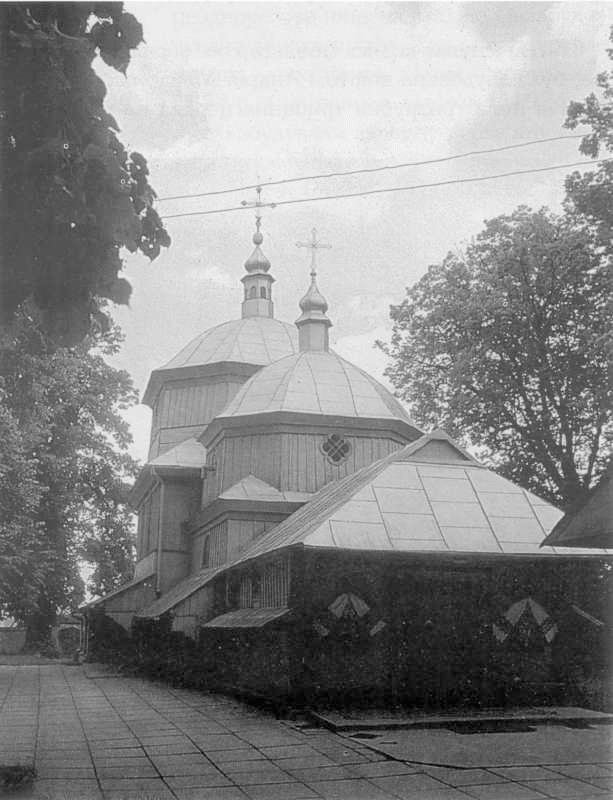
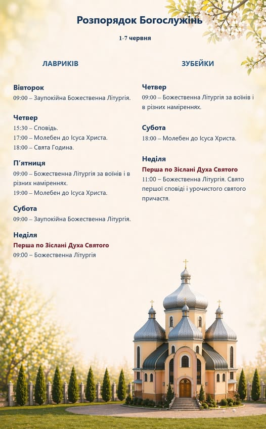

Парафія Лавриків
Різдва Пресвятої Богородиці
Сокальсько-Жовківська Єпархія УГКЦ
с. Лавриків






Історичний спомин
Церква Різдва Пр. Богородиці. 1769. У 1578 р. церква в селі вже існувала. В 1769 р. збудована теперішня дерев’яна тризрубна триверха церква, увінчана на світлових восьмериках нави вівтаря і бабинця низькими шоломовими банями з ліхтарями і маківками. Церкву оточує піддашшя, оперте на випусти вінців зрубів. Центральний державний історичний архів України у Львові, фонд 146 Галицьке намісництво, опис 20, справа № 445.
с. Лавриків (Руда Лісна). (УГКЦ) Церква Різдва пр. богородиці. У 1578 p. церква в селі вже діяла. Існують джерельні згадки XVII-XVIII ст. про монастир в урочищі Черчики поруч із селом. У 1769 р. збудована теперішня дерев’яна будівля, як свідчить напис на одвірку західних дверей в присінок: “РБ АΨξΘ”. В пізніші часи неодноразово ремонтувалася. Під час одного з ремонтів добудовано до бабинця присінок, в який переставлено первісні одвірки, а до вівтаря з півночі – велику прямокутну захристію. Ще одна захристія добудована до вівтаря з півдня, поєднана з присінком при південній стіні нави. Розташована на високому горбі в центрі села. На захід від церкви розташований сільський цвинтар. Тризрубна триверха будівля, складається з трьох зрубів, розташованих по осі схід-захід – великої квадратової нави, меншого прямокутного бабинця з заходу і меншого гранчастого вівтаря зі сходу. Вищий зруб четверика надопасання нави через вітрила переходить у світловий восьмерик, вкритий шоломовою банею, завершеною ліхтарем з маківкою. Подібні бані на світлових восьмериках вінчають нижчі зруби надопасання вівтаря і бабинця. Присінок вкритий великим трисхи -лим дахом. Церкву оббігає піддашшя, оперте на великі випусти вінців зрубів, перерване в місці прилягання присінків та ризниць. Стіни церкви шальовані вертикально дошками і лиштвами. На захід розташована сучасна церкві висока дерев’яна триярусна стовпова дзвіниця, вкрита пірамідальним наметовим дахом. На північ – невелика дерев’яна капличка, вкрита двосхилим причілковим дахом. Вхід на прицерковну територію, огороджену муром, веде через браму в північній і хвіртку – в західній стінах.
Оберіть спільноту, щоб дізнатися більше:
Події нашого УМХ:
Події нашого Парафіяльного Хору:
Події нашого Молодіжного Хору:
Події нашого Біблійного гуртка:
Події нашого Апостольства молитви:
Події нашої Марійської дружини:
Мультимедія:

Розпорядок богослужінь
Парафія храму Різдва Пресвятої Богородиці с. Лавриків
Наші успіхи:
Храм Різдва Пресвятої Богородиці Львівська обл., Львівський район, село Лавриків
телефони:
Адміністратор храму о. Ігор Домінський: +380671958187
Дяк Василь: +380983208298
Адміністратор сайту Домінський Данило: +380954185494

Сокальсько-Жовківська Єпархія УГКЦ , Рава-Руський протопресвітеріат с. Лавриків